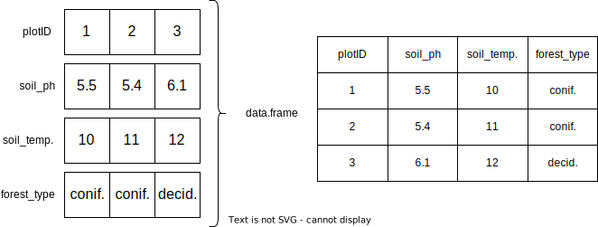

R04: Dataframes
From a data science perspective, the most important class of objects is the data frame - Chambers (2020)
- Dataframes combine multiple vector in a structured format
- Intuitive - most people have seen a spreadsheet before
- Each column is regarded as a vector
- Each vector can have a different data type
- Create one with
data.frame - The functions need the column name followed by the vector of values
df = data.frame(plotID = seq(3),
soil_ph = c(5.5, 5.4, 6.1),
soil_temperature = c(10, 11, 12),
forest_type = c("coniferous", "coniferous", "deciduous"))
df plotID soil_ph soil_temperature forest_type
1 1 5.5 10 coniferous
2 2 5.4 11 coniferous
3 3 6.1 12 deciduousCSV Files
Dataframes can be loaded from and saved to .csv files.
- Comma Separated Values
- Caution: In Germany “,” is used as the decimal point. You often find “;” as the delimiter in csvs.
- Caution: If you open csv files in Excel, things can get messy
Datum,Wassertemperatur,pH-Wert,Sauerstoffgehalt
2021-05-31 23:57,17.98,8.05,10.53
2021-06-01 00:09,17.66,8.04,9.64
2021-06-01 00:19,18.03,8.12,11.30
2021-06-01 00:27,18.08,8.14,11.32
2021-06-01 00:39,18.06,8.12,11.06
2021-06-01 00:49,18.01,8.10,10.91- use the
read.csvfunction - make sure the
decandsepparameters of the function are properly set - when in doubt look at the help page
?read.csv
data = read.csv(file = "data/2021-06_aasee.csv", dec = ".", sep = ",")
# show the first few rows of the df
head(data) Datum Wassertemperatur pH.Wert Sauerstoffgehalt
1 2021-05-31 23:57 17.98 8.05 10.53
2 2021-06-01 00:09 17.66 8.04 9.64
3 2021-06-01 00:19 18.03 8.12 11.30
4 2021-06-01 00:27 18.08 8.14 11.32
5 2021-06-01 00:39 18.06 8.12 11.06
6 2021-06-01 00:49 18.01 8.10 10.91# show the last few rows of the df
tail(data) Datum Wassertemperatur pH.Wert Sauerstoffgehalt
4220 2021-06-30 22:57 23.73 8.78 17.80
4221 2021-06-30 23:09 23.70 8.72 17.66
4222 2021-06-30 23:18 23.68 8.73 17.72
4223 2021-06-30 23:29 23.64 8.81 18.38
4224 2021-06-30 23:39 23.62 8.76 17.93
4225 2021-06-30 23:49 23.63 8.77 17.82# get a short summary of the structure
str(data)'data.frame': 4225 obs. of 4 variables:
$ Datum : chr "2021-05-31 23:57" "2021-06-01 00:09" "2021-06-01 00:19" "2021-06-01 00:27" ...
$ Wassertemperatur: num 18 17.7 18 18.1 18.1 ...
$ pH.Wert : num 8.05 8.04 8.12 8.14 8.12 8.1 8.1 8.1 8.1 8.1 ...
$ Sauerstoffgehalt: num 10.53 9.64 11.3 11.32 11.06 ...